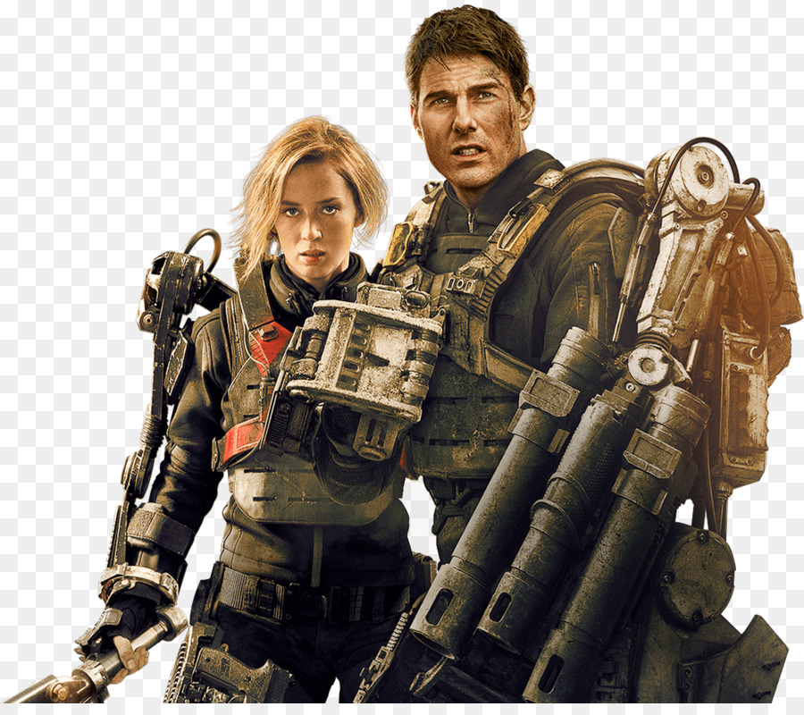

Представь, что ты проснулся в компьютерной игре. Твоя задача — одолеть врага, хитрого, коварного, наделённого суперспособностью… практически непобедимого. К счастью, тебе дали шанс «сохраниться». И вот ты раз за разом проделываешь нелёгкий путь к цели, периодически возвращаясь к месту сохранения. Всё как в игре — только в реальной жизни. Именно это произошло с майором Уиллом Кейджем в фильме «Грань будущего». Каким бы сложным ни казалось задание, герой с ним справился — но финал, хоть и счастливый, оказался не до конца понятен. Поэтому мы с вами попробуем разобраться в том, что же произошло в конце и как вообще работает система перемещений во времени во вселенной фильма.